BodyTwins
Building body confidence in women through the shopping experience. My MA thesis started from one finding: shopping for clothes is the main trigger of body dissatisfaction for women.
BodyTwins connects women with the same body parameters into location-based micro-communities, and shows their reviews of clothes right in the shop through augmented reality.
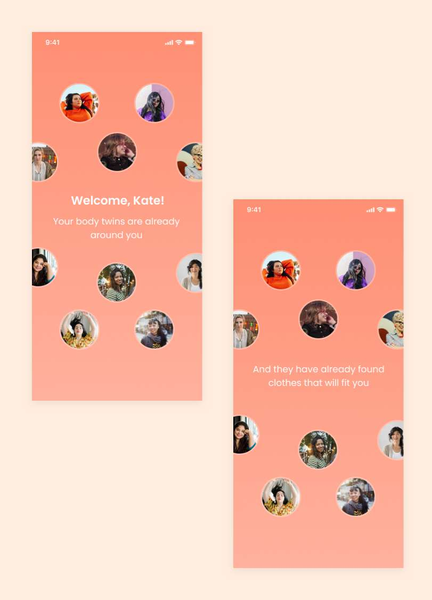
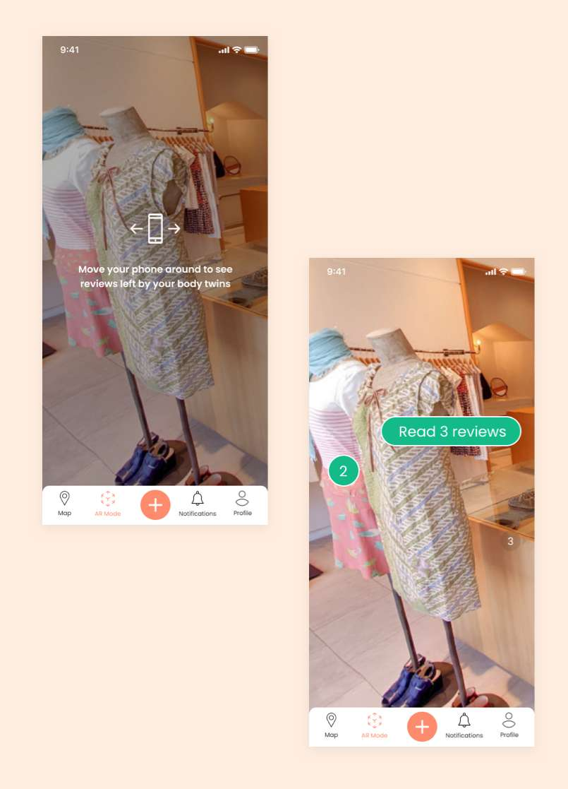
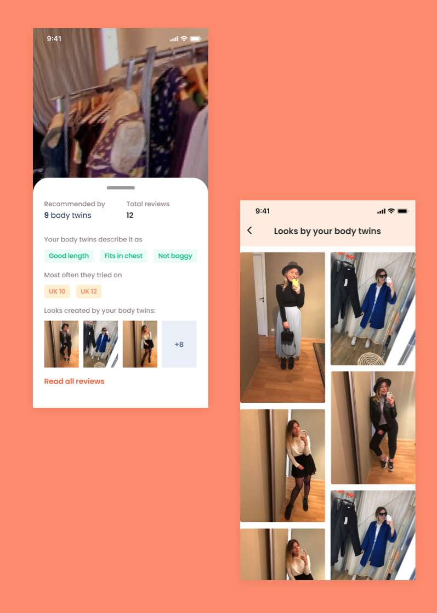
Unattainable ideals
People’s concern about their body image has never been more serious, and the ideals have never been so unattainable. In a 2019 UK survey only 19% of women felt satisfied with their body, and 25% felt shame because of it.
Inspired by Naomi Wolf’s ‘The Beauty Myth’, I set out to explore what influences body dissatisfaction in women and to design a solution that helps them resist social pressure and build body confidence.
Approach
I structured the project with the Double Diamond, alternating between exploring widely and focusing down.
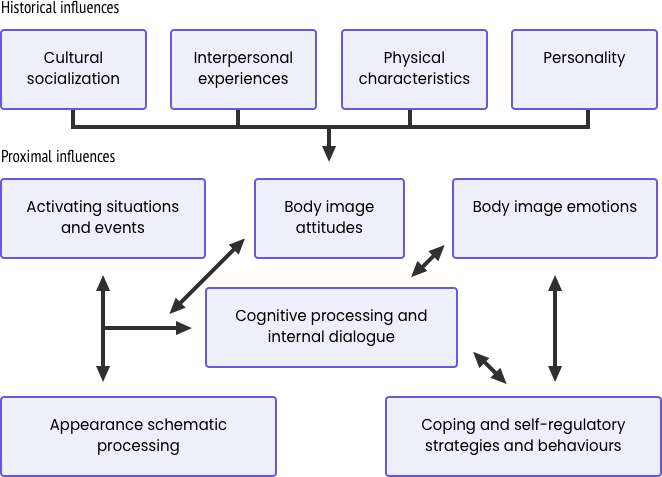
Defining body image
Body image is the picture we form in our minds of our own body: beliefs, feelings and behaviours around it. Using the cognitive-behavioural model, I mapped what shapes it, from cultural socialisation and relationships to everyday activating situations.
Existing solutions worked on therapy, mindfulness or education, but none focused on the everyday situations that trigger dissatisfaction. That became my direction. I designed for women aged 27–35, who still compare themselves to media ideals rather than to women their age.
Collage session
The topic is personal and emotional, so I started with a collage session instead of questions. Three women tore images out of Vogue, Cosmopolitan, Shape and National Geographic and explained their choices. I made my own collage beforehand, as a reminder of my confirmation bias.
My collage turned out very different from theirs. Most women said that body confidence has a lot to do with clothes.
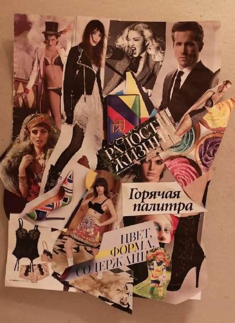
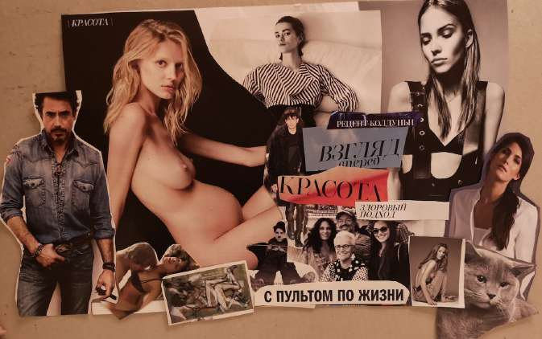
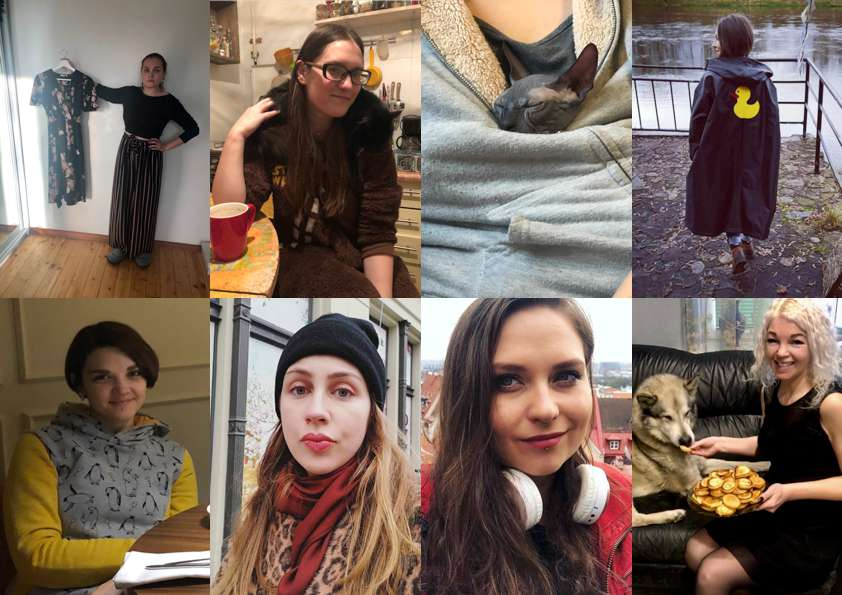
Eight interviews
I ran unstructured interviews with eight women aged 27–35 who are university graduates with careers. I started broad and narrowed down whenever a pattern repeated.
Women already had ways of coping: fitness for mental health, supportive people and critical awareness of media. But shopping kept coming back as the moment it all fell apart. Not finding clothes that fit meant failing to build a personal style, which affected their professional and social lives.
What women told me
Shopping as the trigger
Every woman said she felt worse after shopping. Brands don’t account for individual proportions: clothes fit the hips but not the waist, are too long or too short, and bigger sizes are often just a small size scaled up. Online, clothes are shown on standard models, so the only way to know is to try them on.
‘When I go shopping I expect that most likely I won’t find anything. I take all the clothes I like, and with this pile I go to the dressing room, hoping I will be lucky.’
Failing to find clothes meant failing to build a personal style, and that reached into work and social life.
‘I am a grown woman, I have money, but I still dress like a student.’
The bigger picture
The interviews showed that shopping goes far beyond wasted time. It has a real emotional cost. To understand why, I looked at it from four angles: the retail industry, psychology and culture, what women already do themselves, and existing technology.
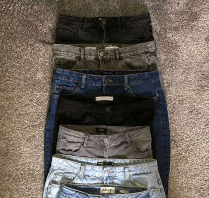
Retail
Zara releases 24 collections a year, and H&M refreshes stock weekly, so what fits today is gone tomorrow. Brands use vanity sizing, labelling clothes smaller than their actual cut to make shoppers feel slim. Smaller women then disappear from the size range entirely, and the same label means something different in every shop.
Ready-to-wear can’t be adjusted to every body, so I decided not to try to change the system but to work with it.
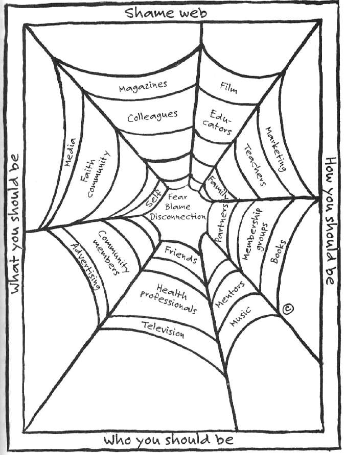
Psychology & culture
Fashion balances two needs: standing out and fitting in. Clothes are how we communicate who we are, and image-based media constantly invites comparison.
Brené Brown describes shame as a web of conflicting expectations about who we should be. Taking a bigger size, or finding nothing at all, starts a chain of comparison that ends in feeling unworthy and alone. Her Shame Resilience Theory became the psychological backbone of the solution.
What women do themselves
Models and influencers share stories of failing to find clothes. Women review brands’ sizing on Instagram, leave tips in comments and run Telegram channels for people with the same problem.
Sharing like this is an unconscious form of shame resilience: accepting vulnerability, practising empathy and building connection. Its weakness is that tips are tied to a place and time, and quickly become outdated.
Technology
Smart mirrors, virtual fitting rooms, AR try-ons and size predictors have reached a high level of visualisation. But they still can’t give realistic size recommendations, they’re run by retailers to drive sales, and they mostly target online shopping.
Design principles
I turned the research into five principles to keep every idea honest.
How might we…
{{ q }}
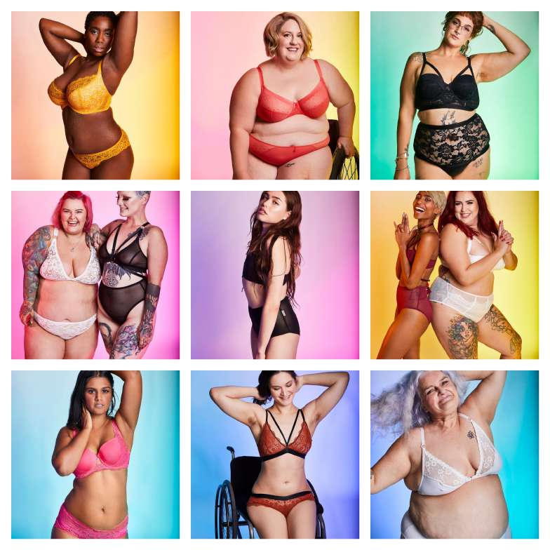
Meet Kate
My persona brings together stories shared by all the women I interviewed. Kate is 29 and works in HR. She’s short and wears XS or XXS depending on the brand. She can’t shop in the kids’ department because she has a dress code, and buying online doesn’t work because she can’t tell what she’ll get. She’s an active Instagram user, loves new tech and believes that sharing is caring.
Brainstorming and sketching
I ran a ‘Yes, And!’ brainstorm with coursemates around the principles, questions and persona. Ideas clustered around a helper (an AI assistant or a friend), light or voice interfaces, and virtual avatars, but most broke at least one principle, usually by changing how sizes or delivery work.
Effective ideation needed deeper knowledge of the topic, so I continued on my own through sketching. I combined the principles in different ways until one concept held them all.
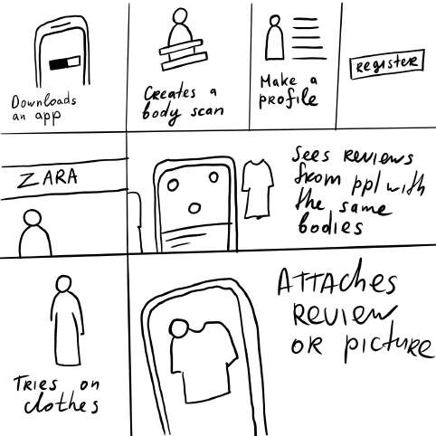
Each shop, a place for body twins
The concept: an AR overlay that only women with the same body parameters can see. Kate walks into a shop and sees what other XS and XXS women tried on, with their positive and negative reviews.
I showed the sketches to my target group early. Women saw it as a time saver and a way to reduce shopping dissatisfaction. They wanted a clear onboarding explaining where the information comes from. Nobody was interested in AR glasses, so the solution became a phone app.
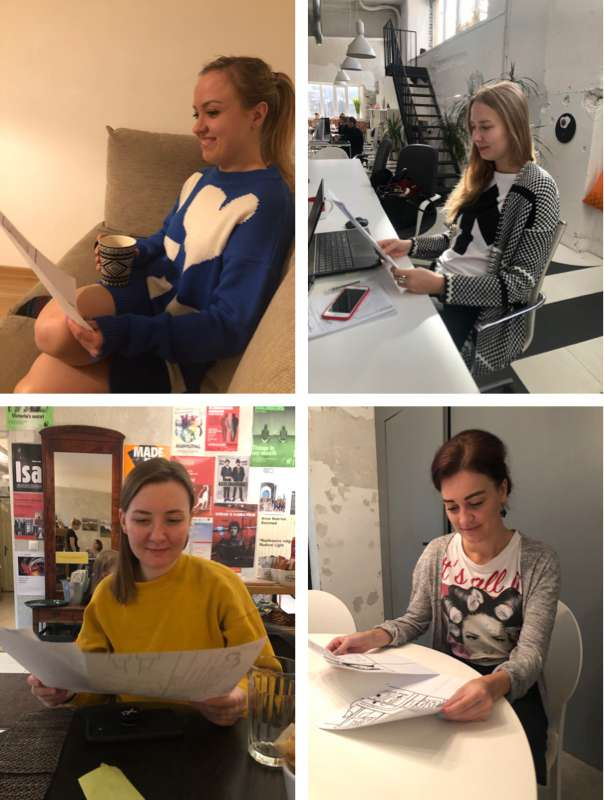
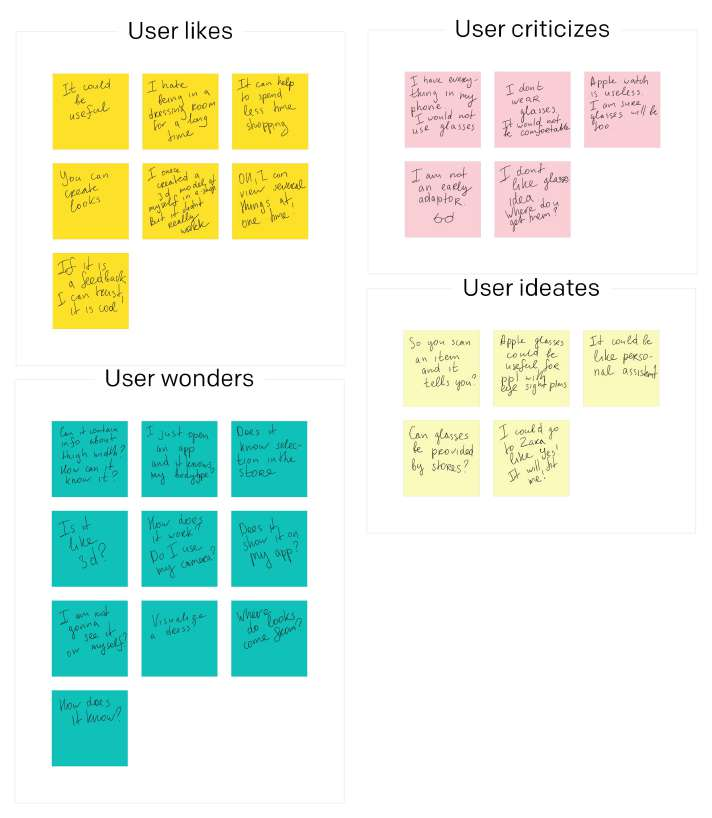
Mental model
Before prototyping I went back to the interviews and wrote down every task women described: actions, thoughts, feelings and motivations. I grouped them into stages, from preparing for a shopping trip to going home empty-handed.
Under each stage I placed functions that could help women complete a task, or spare them from it altogether.
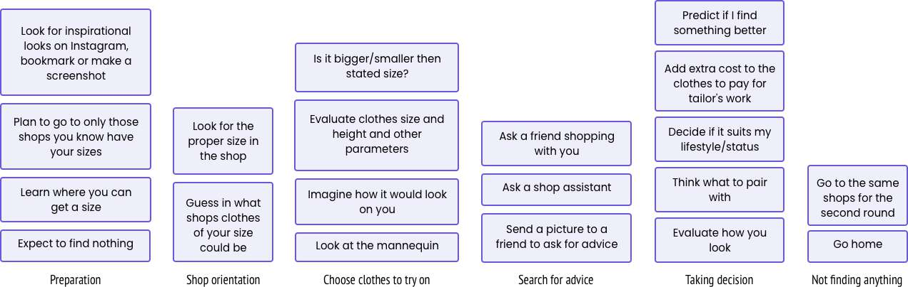
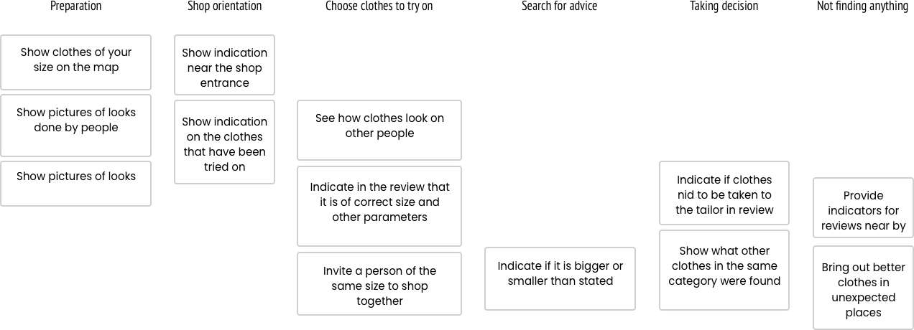
Why AR, why a phone
Smartphone AR is affordable and familiar, and it can provide an individual overlay on top of the existing retail space, which is exactly what the principles asked for. Time-of-flight sensors make body scanning possible, and the solution can move to AR glasses once they become mainstream.
Three rounds, five women each
I ran remote usability tests in Lookback, recruiting participants through a Telegram channel for women looking for brands that fit them.
{{ round.title }}
{{ p }}
BodyTwins
The app follows Kate from scanning her body at home to meeting her body twin in a shopping mall.
{{ finalTitle }}
{{ finalText }}
Main flows
Registration and body scanning: creating an account, uploading a photo, and scanning with voice guidance to turn left, right and around.
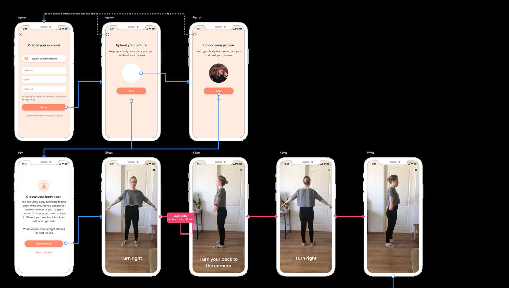
Shame works only if we are alone in it
Viewed through Brené Brown’s Shame Resilience Theory, BodyTwins doesn’t impose an ideal. It brings out real women who are usually invisible in media, and it gives them a way to reach out and share their stories in the context of shopping.
The project taught me to choose the right methods at the right time to narrow down a complex topic, and changed how I see research: not as something that takes creativity out of design, but as what gives it direction. The next step would be testing in a real shop, which wasn’t possible during the pandemic.
Beyond shopping
The same idea of connecting people with similar bodies could work for other activities women avoid because of insecurity, like going to the sauna together, working out with people like you, or a clothes swap where everyone finds something.
‘Ironically, the myth that drives women apart also binds them together.’ - Naomi Wolf